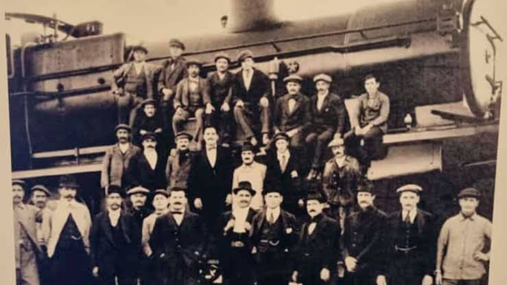
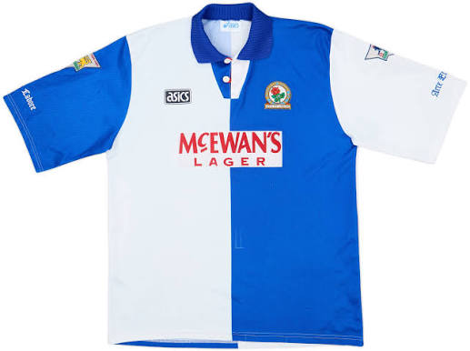
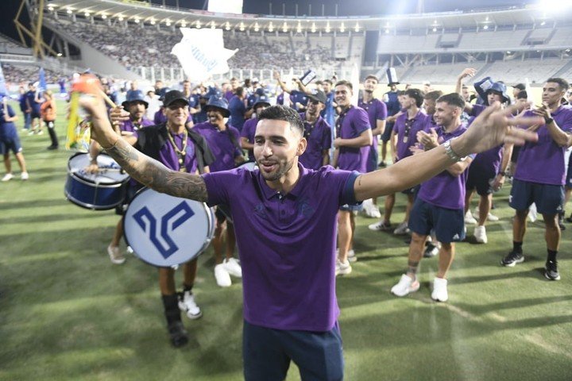
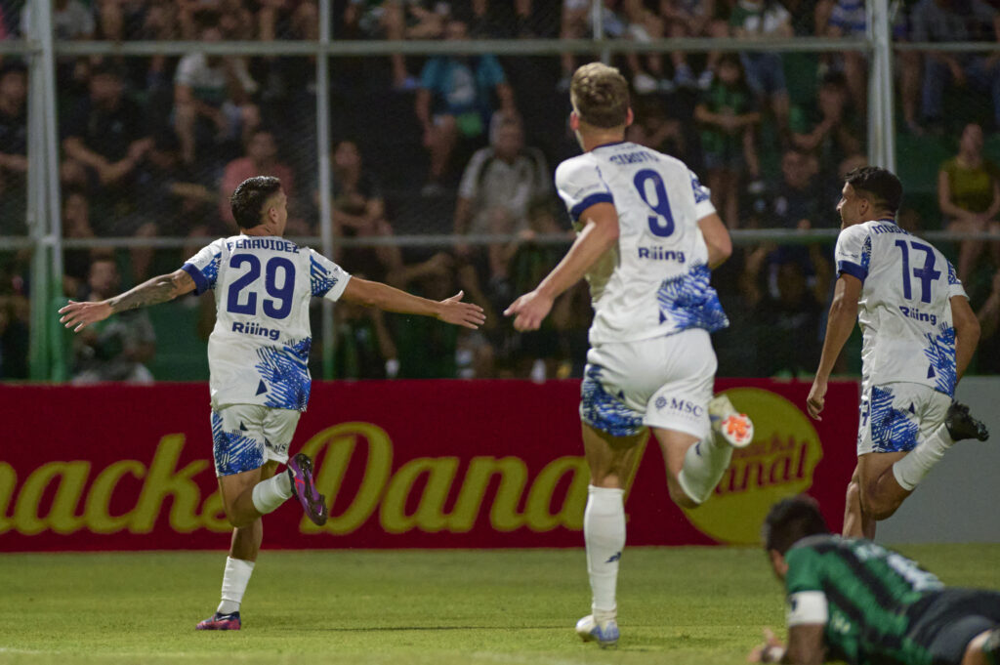
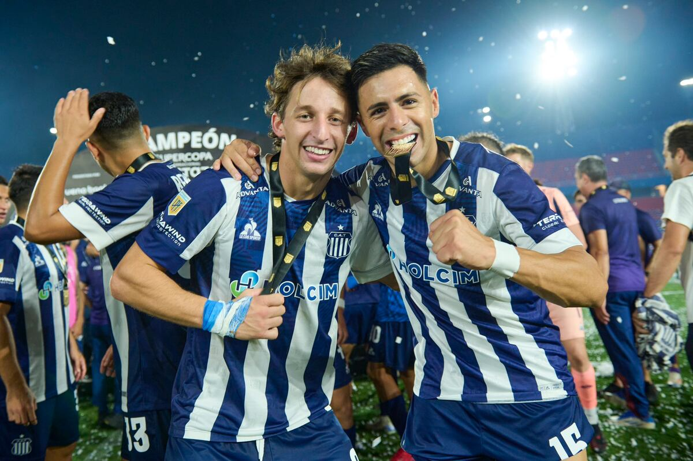

Historia de Talleres
El Club Atlético Talleres fue fundado en Córdoba el 12 de octubre de 1913 por obreros del Ferrocarril Central Córdoba, liderados por el inglés Tomás Lawson. Originalmente llamado Atlético Talleres Central Córdoba, adoptó de forma definitiva sus tradicionales colores azul y blanco a bastones verticales en 1915.
¿Por que son tan importantes los ferrocarriles en su historia?

Los propios trabajadores ferroviarios fundaron la institución para tener un espacio de esparcimiento. Esta profunda conexión quedó grabada para siempre en la mística del club, no solo a través de su nombre original, sino también en su apodo más famoso, "El Matador", que originalmente hacía referencia al ímpetu y la fuerza de la "maquinaria" ferroviaria.
¿Por que se decidieron utilizar los colores azul y blanco?

La elección definitiva de los colores azul y blanco se decidió a principios de 1915 como un homenaje directo al Blackburn Rovers de Inglaterra. El fundador y primer presidente del club, el inmigrante inglés Tomás Lawson, había jugado en esa institución británica antes de emigrar a Argentina y quiso replicar su identidad.
¿Por que es considerado el mas grande del interior?

El Club Atlético Talleres es sumamente conocido por ser el más convocante del interior del país y el único club cordobés con un título internacional oficial (la Copa Conmebol 1999). Su prestigio nacional nació en los años 70, cuando deslumbró al fútbol argentino y aportó tres jugadores clave a la Selección campeona del mundo en 1978.
¿Por que se lo conoce como "El Matador"?

El apodo de "El Matador" se consolidó en la década de 1970, cuando Talleres alcanzó su mayor esplendor deportivo. Durante ese período, el equipo mostró un estilo de juego agresivo y dominante, "matando" a sus rivales en el campo de juego. La prensa y los aficionados comenzaron a referirse al club con este sobrenombre, que ha perdurado hasta la actualidad.
¿Cuales son los titulos mas importantes del club?

El club ha logrado varios títulos a lo largo de su historia, siendo los más destacados la Copa Conmebol 1999, que representa su único título internacional oficial, y los campeonatos nacionales de Primera División obtenidos en diferentes épocas. Estos logros han cimentado la reputación de Talleres como uno de los clubes más importantes del fútbol argentino.